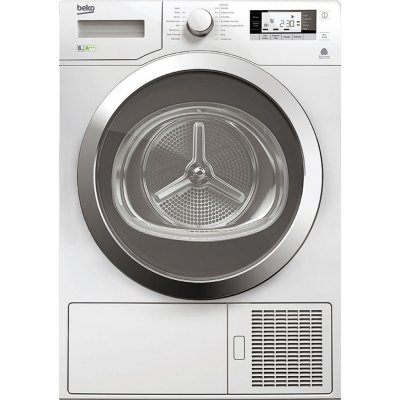
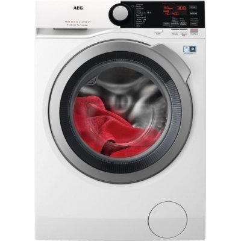
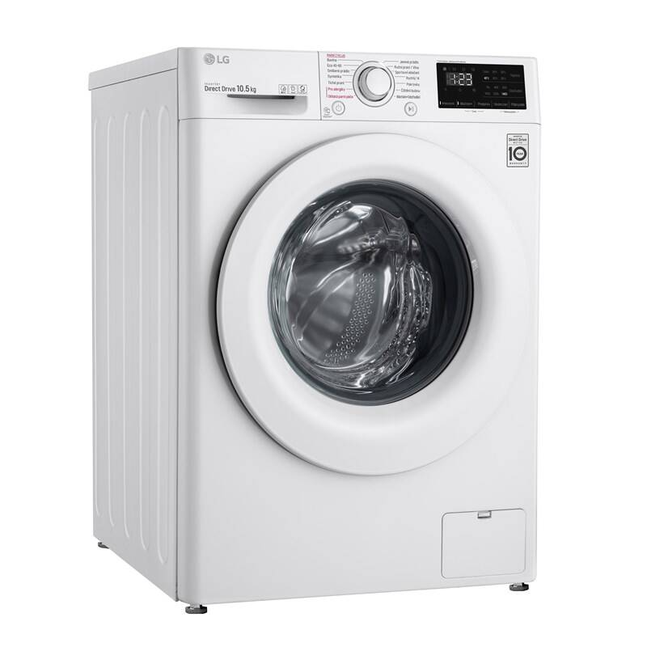
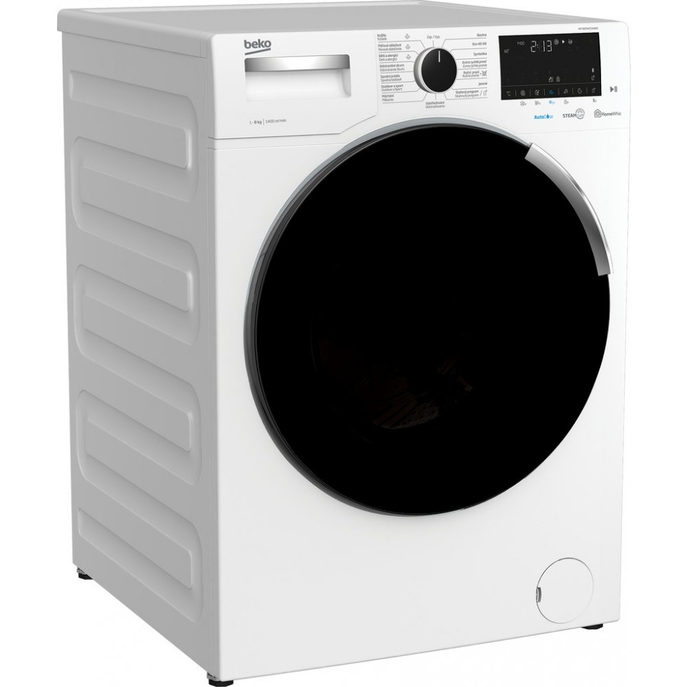
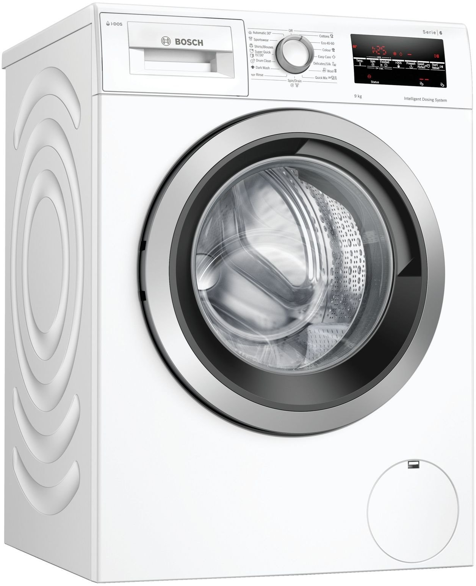

PRÁČKY
Sušička bielizne Beko DPY 8506 GXB1, A+++

- Popis a špecifikácie:
- Kapacita bubna 8 kg, Energetická účinnosť A+++, Hlučnosť 65 decibel, odložený štart, Výška 846 mm, Šírka 595 mm, Hĺbka 609 mm
Cena: 449,00 €
Práčka s predným plnením AEG ProSteam L7FBE68SC

- Popis a špecifikácie:
- A+++, Maximálne otáčky odstreďovania 1600 ot/min, Kapacita bubna 8 kg, Výška 850 mm, Šírka 60 cm, Hĺbka 54,2 cm
Cena: 588,90 €
Práčka s predným plnením LG F4WV310S3E

- Popis a špecifikácie
- B, Maximálne otáčky odstreďovania 1360 ot/min, Výška 850 mm, Šírka 600 mm, Hĺbka 570 mm
Cena: 394,68 €
Práčka s predným plnením Beko WTV 8744 CS XW0

- Popis a špecifikácie
- C, Maximálne otáčky odstreďovania 1400 ot/min, Kapacita bubna 8 kg, Výška 840 mm, Šírka 600 mm, Hĺbka 590 mm
Cena: 489,00 €
Práčka s predným plnením Bosch WAU28S60BY

- Popis a špecifikácie
- C, Maximálne otáčky odstreďovania 1400 ot/min, Výška 590 mm, Šírka 845 mm, Hĺbka 598 mm
Cena: 537,92 €